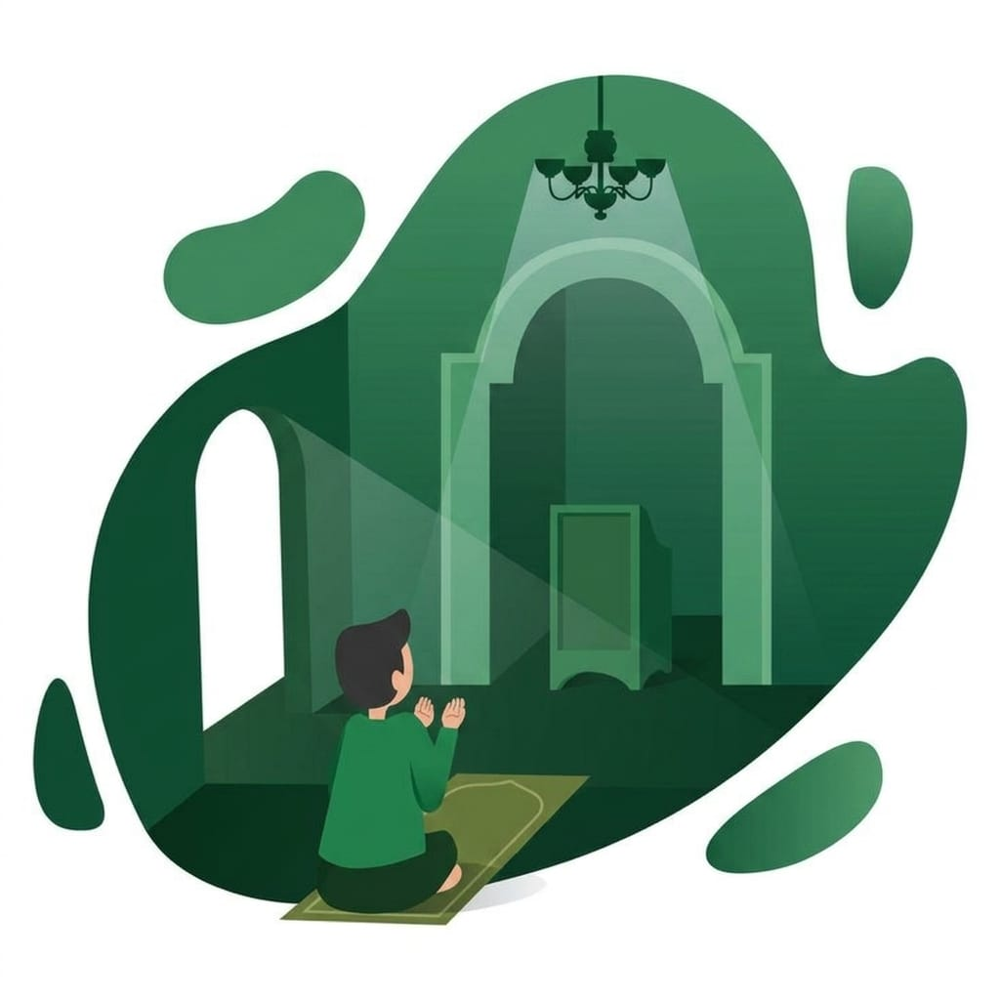

Parents often want to teach Aqidah clearly without overwhelming children with terminology or turning questions into tests. A level-by-level approach gives each age room to learn belief through warmth, repetition, and examples drawn from everyday family life.
Begin With Security
Teaching Aqidah starts with a secure relationship, not a list of difficult terms. Children ask who created the world, why we worship Allah, and what it means to trust Him. Answer with clarity, patience, and wonder. The aim is to plant sound foundations while showing that belief connects to love, gratitude, responsibility, and hope. A calm answer today may become a reference point when questions become more detailed.
Move From Simple to Deeper
A level-by-level plan protects children from being overwhelmed. Begin with the oneness of Allah and the purpose of worship in language suitable for the child. Later lessons can introduce angels, prophets, revealed books, the Last Day, and divine decree with more detail. In our Aqidah courses and Islamic Studies courses, progression gives teachers room to revisit foundations instead of assuming one explanation is enough.
Treat Questions as Doors
A child’s question is an invitation to teach, not a challenge to authority. If you do not know, say that you will ask a qualified teacher. Avoid making the child feel guilty for asking. Questions reveal which words need explanation and which ideas were misunderstood. Short conversations repeated over time are often more helpful than one long lecture, and they teach the child that learning faith includes honesty and patience.
Connect Belief With Character
Aqidah should not remain separate from conduct. Belief in Allah can connect to honesty when nobody is watching, gratitude, mercy toward siblings, and responsibility for words. This does not mean using belief as a threat whenever behavior is difficult. It means showing that faith gives meaning to good conduct. Our article on Islamic studies and a child’s character explores how learning can nurture morals alongside knowledge.
Repeat Without Heaviness
Children need repetition because understanding develops in layers. Revisit one foundation through a story, a question, an activity, and a daily example. Change the wording while preserving the meaning. A short conversation at dinner may reinforce a lesson better than a worksheet completed once. Keep the pace realistic and tell the teacher when a child needs more practice or a simpler explanation.
Create a Warm Home
Parents teach Aqidah through the atmosphere of the home as well as planned lessons. Let children hear gratitude, see adults turn to Allah in difficulty, and notice that worship is a source of meaning. Protect their love of Quran learning too; our guide on helping children love Quran learning offers practical ideas for mercy and consistency.
Let Growth Take Time
The goal is not for a child to repeat every definition perfectly. It is a sound foundation, a healthy relationship with questions, and growing awareness that faith shapes life. Some children need more stories and revision. Work with the child’s stage, celebrate honest effort, and keep returning to foundations. Level-by-level Aqidah teaching is a patient investment that can mature for years.
Use Everyday Language
Children often understand belief through ordinary questions: who gives us blessings, why do we ask Allah for help, and how should we behave when nobody sees us? Use language they can understand, then repeat the meaning in a different situation. A walk may lead to gratitude, while a family difficulty may open a gentle conversation about dua and trust.
Avoid presenting every answer as a debate or using fear to end questions. When a concept is beyond the child’s stage, explain that it will come later. A drawing, story, or question can invite participation, while sharing observations with the teacher helps the next lesson build on what the child remembers.
Let Understanding Mature
A child may repeat a phrase before fully understanding it, and that is part of learning. Return to the idea later through a new example, invite the child to explain it, and gently correct confusion. Do not measure faith by performance in one lesson. Patient teaching gives foundations time to settle and leaves the child willing to learn more.
Ready to take the next step? Ask on WhatsApp